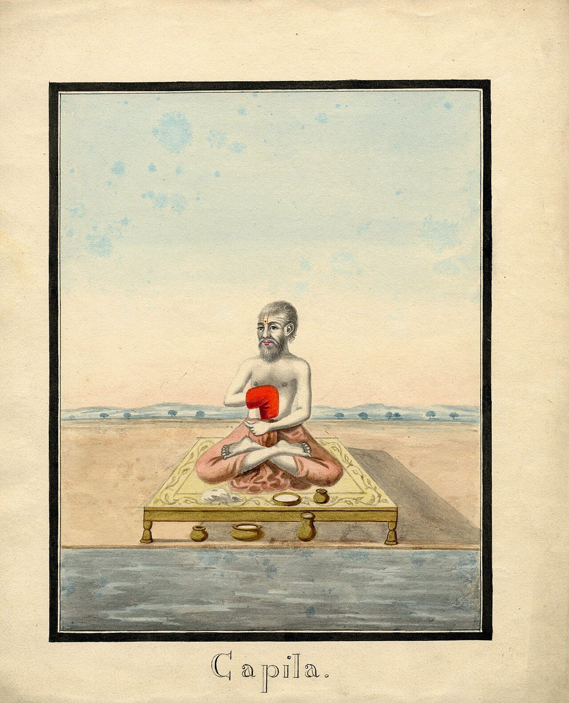
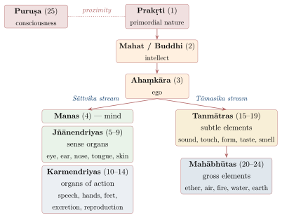
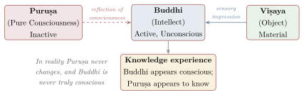

Chapter 4: Sāṃkhya — The Philosophy of Cosmic Enumeration¶
The Opening Verse of the Sāṃkhyakārikā
duḥkha-trayābhighātāj jijñāsā tad-abhighātake hetau
dṛṣṭe sāpārthā cen naikāntātyantato ’bhāvāt
From the torment of the threefold suffering arises the inquiry into the means of removing it. If it be said that this inquiry is needless since visible means exist — not so, for those means are neither certain nor final.
— Sāṃkhyakārikā 1 (Īśvarakṛṣṇa)
4.1 Historical Background¶
Ideas later systematised as Sāṃkhya are among the oldest in Indian philosophy: lists of principles and the distinction between the self and the evolving world appear in the Kaṭha and Śvetāśvatara Upaniṣads and in the Mokṣadharma section of the Mahābhārata. The classical system, however, is known to us only from the Sāṃkhyakārikā (c. 350–450 CE). The word sāṃkhya is usually derived from saṅkhyā (number, enumeration), since the system proceeds by enumerating the principles (tattvas) of reality; it may also mean “discrimination” or “reasoned reflection” (Larson 1979; Larson and Bhattacharya 1987).
Historical Note: Maharshi Kapila — The Primordial Philosopher
The Sāṃkhya system is attributed to the legendary sage Kapila, whom tradition reveres as one of the most ancient among the seers. The Bhagavad Gītā (10.26) declares: “siddhānāṃ kapilo muniḥ” — “Among the perfected ones, I am the sage Kapila.” The Śvetāśvatara Upaniṣad (5.2) speaks of a “kapila seer” born in the beginning; whether this refers to the sage or simply means “the red/tawny seer” (Hiraṇyagarbha) is disputed. Kapila’s disciple Āsuri and Āsuri’s disciple Pañcaśikha are named in the tradition, but nothing of their works survives beyond fragments.
The Sāṃkhyasūtra attributed to Kapila is a late work (c. 14th–15th century CE). The earliest surviving systematic text of the school is Īśvarakṛṣṇa’s Sāṃkhyakārikā (c. 350–450 CE), in about seventy verses, which itself claims to summarise an older work, the lost Ṣaṣṭitantra.
4.1.1 Key Texts¶
Table 4.1 lists the key texts of the school.
| Text | Author | Date | Significance |
|---|---|---|---|
| Sāṃkhyakārikā | Īśvarakṛṣṇa | c. 350–450 CE | Classical systematic text (c. 70 verses) |
| Chinese translation with commentary | Paramārtha | 6th c. CE | Earliest dated witness to the Kārikā |
| Yuktidīpikā | Anonymous | c. 6th–7th c. CE | Most detailed early commentary |
| Sāṃkhyatattvakaumudī | Vācaspati Miśra | 9th or 10th c. CE | Most influential commentary |
| Sāṃkhyasūtra | Kapila (trad.) | c. 14th–15th c. CE | Late sūtra text |
| Sāṃkhyapravacanabhāṣya | Vijñānabhikṣu | 16th c. CE | Theistic, Vedāntic interpretation |
An illustrative painting is reproduced in Figure 4.1.


4.2 Suffering and the Inquiry¶
The Kārikā begins, as the epigraph to this chapter shows, with suffering. The commentators distinguish three kinds: suffering that arises within oneself, in body (illness) or mind (grief, desire, anger) (ādhyātmika); suffering caused by other beings, human or animal (ādhibhautika); and suffering caused by forces beyond human control, such as weather, natural calamity or supernatural beings (ādhidaivika). The same triad is used throughout later Indian literature.
The first two verses then argue that the inquiry is not idle. Visible remedies — medicine, wealth, power, social arrangements — are neither certain (ekānta) nor final (atyanta): they do not always work, and when they work the suffering returns. The Vedic means (ānuśravika, “what is heard” in the Veda) are “like the seen” (verse 2): they are tainted by impurity (aviśuddhi), which the commentators explain as the killing of animals in sacrifice, and their results decay and are unequal. Only discriminative knowledge (viveka) of the difference between the conscious self and everything material can end suffering absolutely. The argument places Sāṃkhya in open tension with Pūrva Mīmāṃsā (Chapter 6), for which Vedic ritual is the highest human pursuit. It is not that ritual is useless; its benefits belong to the realm of matter and its transformations, and so cannot touch the self, which alone needs to be freed.
4.3 Two Ultimate Principles: Puruṣa and Prakṛti¶
The system rests on a dualism of two irreducible kinds of reality. Puruṣa, the self, is pure consciousness: eternal, unchanging, inactive, without qualities, the witness of experience, and many in number. Prakṛti, primordial nature, is unconscious, eternal and always active; it is one, it is made of three constituents (guṇas), and it is the root cause (mūla-prakṛti) of everything manifest, including the mind. The Kārikā infers the nature of the self from its contrast with what has the three constituents:
The Nature of Puruṣa
sākṣitvam asya puruṣasya kaivalyaṃ mādhyasthyaṃ draṣṭṛtvam akartṛbhāvaś ca
[From its contrast with what has the three guṇas, it is established that] this Puruṣa is a witness, isolated, neutral, a seer, and a non-agent.
— Sāṃkhyakārikā 19 (excerpt)
4.3.1 The Arguments for Prakṛti¶
Why believe in a single, unmanifest material cause? Verse 15 gives five reasons, which together form one argument. The manifest things are limited in size and number (bhedānāṃ parimāṇāt), and what is limited depends on something beyond it. They share a common nature (samanvayāt): every one of them, the Sāṃkhya holds, is pleasant, painful or deluding, which suggests a common source with that threefold nature. Effects proceed from a potency already present in their cause (śaktitaḥ pravṛtteḥ), as oil comes from sesame and not from sand. Cause and effect are distinct, as the pot is distinct from the clay (kāraṇakāryavibhāgāt). And at the dissolution of the world the variety of things merges back into an undifferentiated state (avibhāgād vaiśvarūpyasya). Tracing effects back to causes and those causes back again, one must reach a cause that is not itself an effect, and the common nature of all effects tells us what it must be like. The argument depends on the doctrine that effects pre-exist in their causes, discussed below.
4.3.2 The Arguments for Puruṣa¶
Verse 17 argues in the same way for the self. Composite things exist for the sake of something else (saṅghātaparārthatvāt), as a bed is for a sleeper; the whole manifest world, being composite, must exist for something that is not composite. That something must lack the three constituents (triguṇādiviparyayāt), since whatever has them is itself composite and for another. There must be a controller of the body–mind complex (adhiṣṭhānāt), as a chariot has a driver; there must be an experiencer distinct from what is experienced (bhoktṛbhāvāt); and the very striving for liberation (kaivalyārthaṃ pravṛtteḥ) presupposes something that can be freed. The first argument is the most characteristic: it moves from the purposive organisation of matter to a subject for whose sake it is organised, without making that subject its maker.
4.3.3 Why There Are Many Selves¶
Unlike Advaita, which holds that there is only one self whose apparent plurality is due to ignorance, Sāṃkhya holds that selves are really many (puruṣa-bahutva). Verse 18 gives three reasons. Birth, death and the sense capacities are allotted separately (janana-maraṇa-karaṇānāṃ pratiniyamāt): if there were one self, all would be born when one was born, and all would be blind when one was blind. Beings do not act all at once (ayugapat pravṛtteś ca). And the proportions of the three constituents differ from one being to another (traiguṇyaviparyayāt). The reasons show that experiences are many; it is less clear that they show the selves are many, since the Sāṃkhya self does not itself experience anything. Its critics pressed this point. If every self is pure, attributeless consciousness, what makes one self different from another? The Sāṃkhya answer is that they are numerically distinct though qualitatively alike, and are told apart only by their association with different intellects; the Advaitins replied that a plurality with no ground of difference is unintelligible. Modern readers have compared the problem with debates over Leibniz’s “identity of indiscernibles”. The doctrine has clear consequences: liberation is an individual affair, each self reaps only the fruits of dispositions in its own intellect, and the world never ceases, since some selves always remain bound.
4.4 The Three Guṇas¶
Guṇa here does not mean “quality” in the ordinary sense but a constituent strand of primordial nature. The three — sattva, rajas and tamas — are among Sāṃkhya’s most influential ideas; they were adopted by the Bhagavad Gītā, the Purāṇas, Vedānta and Āyurveda. The Kārikā defines them by their affective character, their function and their mode of interaction:
The Nature of the Guṇas
prīty-aprīti-viṣādātmakāḥ prakāśa-pravṛtti-niyamārthāḥ
anyonyābhibhavāśraya-janana-mithuna-vṛttayaś ca guṇāḥ
The guṇas have the nature of pleasure, pain and dejection; their purposes are illumination, activity and restraint; they mutually dominate, support, produce and pair with each other.
— Sāṃkhyakārikā 12
| Guṇa | Nature | Function | Physical and psychological effects |
|---|---|---|---|
| Sattva | Light, illumination | Reveals, illumines | Lightness, clarity, joy, knowledge, serenity |
| Rajas | Activity, motion | Activates, stimulates | Restlessness, desire, effort, passion, anxiety |
| Tamas | Inertia, darkness | Obstructs, veils | Heaviness, dullness, confusion, sloth, sleep |
The three are never found apart. Every manifest thing, physical or mental, is a particular balance of them, and change is a shift in that balance. In the state of dissolution (pralaya) they are in equilibrium (sāmyāvasthā), and nothing is manifest. When the equilibrium is disturbed, manifestation begins. What disturbs it is the system’s great puzzle. The Kārikā speaks of the “conjunction” (saṃyoga, verse 21) of the self and nature, the commentators of mere proximity (sānnidhya); the Yoga Bhāṣya (on 1.4) compares the self to a magnet, which moves iron without doing anything. Critics asked how proximity between two realities that have nothing in common — one conscious and inactive, the other unconscious and active — could start the whole process of the world, and Śaṅkara pressed the objection in the Brahmasūtrabhāṣya (2.2.1–10). The Sāṃkhya has no answer beyond the analogies, and it is the main reason later Vedāntins thought the system needed a conscious first cause.
4.5 The Pre-existence of the Effect (Satkāryavāda)¶
The argument for primordial nature rests on Sāṃkhya’s theory of causation, that the effect exists in its cause before it is produced:
Satkāryavāda
asad-akaraṇād upādāna-grahaṇāt sarva-sambhavābhāvāt
śaktasya śakya-karaṇāt kāraṇa-bhāvāc ca satkāryam
The effect pre-exists in the cause because: (1) what is non-existent cannot be produced, (2) there must be a material cause, (3) everything cannot come from everything, (4) only a potent cause produces its specific effect, (5) the effect has the nature of the cause.
— Sāṃkhyakārikā 9
The five reasons are not independent; they work together against the Nyāya-Vaiśeṣika view that the effect is a new thing (Chapter 3). If the effect did not exist beforehand, it would be like a hare’s horn, and nothing can make that exist. If it did not pre-exist, any cause could produce any effect; but people seek clay for pots and milk for curds, and do not get oil from sand. The best explanation of these facts, the Sāṃkhya argues, is that a cause has a determinate capacity for its effect, and that the effect is that capacity made manifest. Production is then manifestation (abhivyakti), and destruction is a return to the unmanifest. The Naiyāyika’s reply is that if the pot is already in the clay, the potter’s work is pointless and the pot should be visible before it is made; the Sāṃkhya answers that the potter’s work is needed to make the pot manifest, as a lamp is needed to show a pot already in a dark room.
Sāṃkhya’s version of the doctrine is pariṇāmavāda: causation is a real transformation of the cause into the effect, as milk becomes curds. Advaita Vedānta also holds that the effect pre-exists in the cause but treats the transformation as only apparent (vivarta; Chapter 7).
4.6 Manifestation: The Twenty-Five Tattvas¶
Sāṃkhya’s best-known doctrine is its enumeration of twenty-five principles (tattvas), which describes the order in which primordial nature becomes manifest (Figure 4.2). The process is often called “evolution”, but the word is misleading: it is not a history of the world in time so much as an analysis of its structure, read as a series of transformations (pariṇāma) from the subtle to the gross.

From unmanifest nature arises first the intellect (mahat or buddhi), the principle of ascertainment; from it the “I-maker” (ahaṃkāra), the principle of individuation. From the I-maker the sequence divides in two. In its sāttvika aspect it produces the mind (manas), the five sense capacities and the five capacities of action — eleven principles; in its tāmasa aspect it produces the five subtle elements (tanmātras: sound, touch, form, taste and smell), from which the five gross elements arise — ten principles. With primordial nature, intellect and I-maker these make twenty-four; the self, which is not produced and produces nothing, is the twenty-fifth. The order is striking. The intellect and the ego come before the physical elements, and the mind is on the side of matter: what a Cartesian would call mental is, for Sāṃkhya, the subtlest part of nature.
The Kārikā also groups everything into three: the manifest (vyakta), the twenty-three products from intellect down to the gross elements; the unmanifest (avyakta), primordial nature itself, which is a cause but never an effect; and the knower (jña), the self, which is neither cause nor effect. Their characteristics are set out in Table 4.3.
| Property | Vyakta (Manifest) | Avyakta (Unmanifest) | Puruṣa (Knower) |
|---|---|---|---|
| Caused? | Yes (caused by Prakṛti) | No (uncaused) | No (uncaused) |
| Finite? | Yes (impermanent) | No (eternal) | No (eternal) |
| Composed of guṇas? | Yes | Yes | No |
| Active? | Yes (sakriya) | No movement (akriya), though it transforms | No (inactive) |
| Conscious? | No | No | Yes |
| Many or one? | Many evolutes | One (single root) | Many (plural selves) |
The process is purposive, though no one designs it. Nature becomes manifest for the sake of the self — for its experience (bhoga) and for its liberation (apavarga) — as milk flows, unconsciously, for the calf’s nourishment (verse 57). This teleology without a designer is one of the most characteristic features of the system, and its most questionable: critics asked how an unconscious nature can act for a purpose at all.
4.7 Knowledge, the Inner Organ and the Theory of Reflection¶
Sāṃkhya accepts three means of knowledge: perception; inference, of the three kinds also named by Nyāya (pūrvavat, śeṣavat and sāmānyato-dṛṣṭa); and reliable testimony (āpta-vacana). Its own contribution is its account of the apparatus of knowing. The “inner instrument” (antaḥkaraṇa) has three parts: the intellect (buddhi), whose function is ascertainment (adhyavasāya) — “this is a pot”, “this is to be done”; the I-maker (ahaṃkāra), which appropriates what the intellect determines — “I know this”, “this is mine”; and the mind (manas), which organises the data of the senses and directs the organs of action. The external senses are the “gateways” through which the inner instrument meets the world. In perception the senses present an object, the mind organises the impression, the I-maker claims it, and the intellect ascertains it. All this is a process within nature: all knowing, in the ordinary sense, belongs to matter.
This creates a difficulty. The self is conscious but does nothing; the intellect does everything but is unconscious. How can there be conscious knowledge at all? The answer worked out by the commentators, Vācaspati Miśra and Vijñānabhikṣu in particular, is a theory of reflection. The intellect, the subtlest and most transparent product of nature, dominated by sattva, reflects the light of the self’s consciousness as a mirror reflects light. The intellect then appears conscious, and the self appears to know and to suffer, though in reality neither has the other’s character (Figure 4.3). Bondage is this mutual appearance; liberation is seeing through it.

4.8 Dispositions and the Subtle Body¶
The intellect is also the seat of character. The Kārikā (23, 44–45) names eight dispositions (bhāvas) of the intellect, in four opposed pairs, each with its own result (Table 4.4).
| Sāttvika | Leads to | Nature | Tāmasika | Leads to | Nature |
|---|---|---|---|---|---|
| Dharma | Rise to higher states | Virtue | Adharma | Descent to lower states | Vice |
| Jñāna | Liberation | Knowledge | Ajñāna | Bondage | Ignorance |
| Vairāgya | Absorption in prakṛti | Dispassion | Avairāgya | Continued saṃsāra | Attachment |
| Aiśvarya | Unimpeded will | Mastery | Anaiśvarya | Frustration | Powerlessness |
Only knowledge (jñāna) leads to liberation; virtue leads merely to a better rebirth, and even dispassion without knowledge leads only to temporary absorption in prakṛti.
These dispositions are carried from life to life by the subtle body (liṅga-śarīra), which gives Sāṃkhya its account of rebirth. While the gross body perishes at death, the subtle body persists. It is made of eighteen elements — the intellect, the I-maker and the mind, the five sense capacities, the five capacities of action and the five subtle elements — and it transmigrates from one gross body to another:
The Transmigrating Subtle Body
pūrvotpannam asaktaṃ niyataṃ mahadādisūkṣmaparyantam
saṃsarati nirupabhogaṃ bhāvair adhivāsitaṃ liṅgam
The subtle body, produced in the beginning, unattached, constant, consisting of the principles from mahat down to the subtle elements, transmigrates without enjoyment, perfumed by the dispositions.
— Sāṃkhyakārikā 40
The components are listed in Table 4.5.
| Category | Number | Components |
|---|---|---|
| Antaḥkaraṇa (Inner organ) | 3 | Buddhi (intellect), Ahaṃkāra (ego), Manas (mind) |
| Jñānendriyas (Sense capacities) | 5 | Seeing, hearing, smelling, tasting, touching |
| Karmendriyas (Action capacities) | 5 | Speaking, grasping, locomotion, excretion, reproduction |
| Tanmātras (Subtle elements) | 5 | Śabda (sound), Sparśa (touch), Rūpa (form), Rasa (taste), Gandha (smell) |
| Total | 18 |
The subtle body requires a support (āśraya), just as a painting requires a canvas or a shadow requires a post (Sāṃkhyakārikā 41). Without a physical frame, the subtle body cannot function. Yet the subtle body itself is the carrier of bhāvas (dispositions) — the accumulated psychological tendencies of virtue and vice, knowledge and ignorance, attachment and detachment, power and powerlessness — that determine the character and destiny of the individual across lifetimes.
The impressions (saṃskāras) left by past experience and action, and the tendencies (vāsanās) that grow from them, are the content of these dispositions. The literature of Sāṃkhya and Yoga compares them to seeds, which sprout into future experience and future births unless discriminative knowledge “roasts” them. The commentators add that the subtle body lasts until the dissolution of the world, when it merges back into primordial nature, and that at each new manifestation the subtle bodies re-emerge with their dispositions.
4.9 Liberation (Kaivalya)¶
Liberation is kaivalya, the “aloneness” or isolation of the self from nature, and it is reached through the discriminative knowledge that the self is not the intellect, nor the I-maker, nor anything material. The Kārikā describes the association of self and nature with an analogy:
The Analogy of the Lame and the Blind
puruṣasya darśanārthaṃ kaivalyārthaṃ tathā pradhānasya
paṅgvandhavad ubhayor api saṃyogas tatkṛtaḥ sargaḥ
For the Puruṣa’s seeing of Pradhāna (Prakṛti), and likewise for its isolation, there is union of the two, like that of a lame man and a blind man. From this union proceeds creation.
— Sāṃkhyakārikā 21
The self is like a lame man who can see, nature like a blind man who can walk; together they make the journey of experience. Liberation, on this picture, is not a new state that the self attains but the end of a confusion. In the Kārikā’s other famous image (verse 59), nature is like a dancer who stops dancing once she has been seen by the audience; when the self has seen nature for what it is, nature ceases to act with respect to that self. Strictly, the Kārikā says (verse 62), no self is ever bound or freed: it is nature, in its various forms, that is bound and is released. The claim follows from the system’s premises, but it makes liberation curiously impersonal: what the self gains is nothing, and what nature loses is one spectator.
4.10 The Question of God in Sāṃkhya¶
Classical Sāṃkhya is non-theistic (nirīśvara). The Kārikā does not invoke God as the cause of the world, since nature’s own transformations are sufficient; the Yuktidīpikā argues against a creator; and the late Sāṃkhyasūtra (1.92) declares that God’s existence is not established (īśvarāsiddheḥ). Later interpreters moved the other way: the Bhagavad Gītā had already set Sāṃkhya’s categories within a theistic framework, and Vijñānabhikṣu (16th century) read the system theistically. The case shows that “orthodoxy” (āstikya) was defined by acceptance of Vedic authority rather than by theism, although Sāṃkhya’s own commitment to the Veda was limited, as its verdict on ritual shows.
4.11 Sāṃkhya in the Bhagavad Gītā and the Epics¶
The Bhagavad Gītā represents the most influential integration of Sāṃkhya thought into the broader Hindu tradition. The Gītā’s second chapter is titled “Sāṃkhya Yoga” in later colophons, and Sāṃkhya categories recur throughout the text — though “sāṃkhya” in the Gītā often means the path of knowledge in general rather than the classical system. However, the Gītā’s use of Sāṃkhya is not a mere reproduction of the classical system; it involves a creative reinterpretation within a theistic and devotional framework.
4.11.1 Sāṃkhya Categories in the Gītā¶
The Gītā adopts the Sāṃkhya categories of Puruṣa, Prakṛti and the three guṇas, and lists constituents of the “field” close to the Sāṃkhya principles (13.5–6), but integrates them within a framework that acknowledges a supreme personal God (Kṛṣṇa/īśvara) who transcends both Puruṣa and Prakṛti. In the Gītā’s scheme (7.4–5), the eightfold material nature is God’s “lower nature” (aparā prakṛti), while the living selves constitute the “higher nature” (parā prakṛti). Both are subordinate to the supreme reality of Kṛṣṇa.
The Gītā’s chapters 13, 14, and 18 contain extensive treatments of Sāṃkhya categories. Chapter 13 (Kṣetra-Kṣetrajña Vibhāga Yoga) distinguishes the “field” (kṣetra, corresponding to Prakṛti and its evolutes) from the “knower of the field” (kṣetrajña, corresponding to Puruṣa). Chapter 14 (Guṇa-Traya Vibhāga Yoga) provides a detailed analysis of the three guṇas and their effects on human character and destiny. Chapter 18 classifies knowledge, action, agents, intellect, firmness, and happiness according to the three guṇas.
4.11.2 Sāṃkhya in the Mahābhārata¶
Beyond the Gītā, the Mahābhārata contains several extended discussions of Sāṃkhya, particularly in the Mokṣa-Dharma-Parvan (Book 12, Śāntiparvan). These passages present various forms of Sāṃkhya, some closer to the classical 25-tattva system and others incorporating theistic elements. Some epic passages enumerate a twenty-sixth principle (the “awakened” or supreme self beyond the individual puruṣa), and others present different evolutionary schemas, testifying to the diverse forms that Sāṃkhya thought assumed before its crystallization in Īśvarakṛṣṇa’s Sāṃkhyakārikā.
4.12 Critics and Comparisons¶
Sāṃkhya’s most persistent critics were the Vedāntins, who shared its interest in consciousness and liberation but rejected its dualism (Table 4.6).
| Issue | Sāṃkhya | Advaita Vedānta |
|---|---|---|
| Ultimate Reality | Dualistic: Puruṣa and Prakṛti | Non-dual: Brahman alone |
| Number of Selves | Many (plurality of Puruṣas) | One (Ātman = Brahman) |
| Status of World | Real transformation (pariṇāma) of Prakṛti | Apparent transformation (vivarta) due to Māyā |
| Causation | Satkāryavāda (Pariṇāma) | Satkāryavāda (Vivarta) |
| God | Not required (nirīśvara) | īśvara (Saguṇa Brahman) at empirical level |
| Liberation | Discrimination of Puruṣa from Prakṛti | Knowledge of identity with Brahman |
| State of Liberation | Kaivalya (isolation) | Merging into Brahman (or realization of identity) |
Śaṅkara devotes considerable effort in his Brahma Sūtra Bhāṣya to refuting Sāṃkhya, particularly its claim that unconscious Prakṛti can be the cause of the world. His central argument is: an unconscious cause cannot produce the ordered, purposive, intelligent universe we observe. Only an intelligent, conscious Brahman can be the ultimate cause.
The most frequent modern comparison is with Descartes’ dualism of thinking and extended substance (Table 4.7). Both systems posit two kinds of reality, consciousness and matter, and both must explain how they are related. The differences, however, are deeper than the likeness.
| Feature | Sāṃkhya | Descartes |
|---|---|---|
| Consciousness | Multiple Puruṣas; passive, witnessing | Single mind per person; active, thinking |
| Matter | Single Prakṛti; dynamic, self-evolving | Mechanical matter; passive, inert |
| Interaction | No real interaction; reflection theory | Interaction through pineal gland |
| Mind | Mind (manas) belongs to matter | Mind is separate substance |
| Goal | Liberation (kaivalya) through discrimination | Knowledge of clear and distinct ideas |
A crucial difference is that Sāṃkhya places the mind, ego, and intellect on the side of Prakṛti (matter), not on the side of consciousness. In Descartes, thinking is the essence of mind; in Sāṃkhya, thinking is a material process that merely reflects consciousness. Sāṃkhya thus avoids the Cartesian problem of how thought interacts with extension, since thinking is itself material; but it faces the parallel problem of how an unchanging consciousness can be related to, and “illuminate”, a material mind.
The system’s influence was wide. Patañjali’s Yoga took over its metaphysics (Chapter 5); the Carakasaṃhitā (Śārīrasthāna 1) presents a Sāṃkhya-like scheme of twenty-four principles that differs from the classical one, evidence of the variety of Sāṃkhya before Īśvarakṛṣṇa, and medical writers classified minds as sāttvika, rājasa and tāmasa (Volume 13, Āyurveda); the three guṇas became a common idiom of Indian culture; and Śaṅkara’s Advaita, while rejecting the dualism, absorbed much of the vocabulary.
4.13 An Assessment¶
Sāṃkhya is the first fully systematic metaphysics in the Brahmanical tradition, and its strengths are those of a system. From a single starting point — the difference between what is conscious and what is not — it derives an account of the world’s structure, of the mind, of rebirth and of liberation, and it argues for each step. Its placing of intellect, ego and mind on the side of matter anticipates, in its own terms, the thought that cognition is a natural process, while its insistence that awareness itself is something else poses the problem of consciousness in a sharp form. Its theory of causation gave Indian philosophy one of its two great alternatives, and its three constituents gave Indian culture a lasting vocabulary of temperament and value.
Its weaknesses were pointed out by its classical critics, and they remain. The relation between self and nature — how mere proximity can set nature in motion, how an inactive consciousness can be “reflected” in an unconscious intellect, how an unconscious nature can act for a purpose — is described by analogies rather than explained. The arguments for many selves show that experiences are many, not obviously that selves are. And the account of liberation, on which nothing happens to the self at all, raises the question of what, on this system, the inquiry announced in its first verse was for. The Vedāntins’ answer, that consciousness must also be the cause of the world, and the Yoga answer, that a special self, īśvara, can guide the process, are both responses to these gaps.